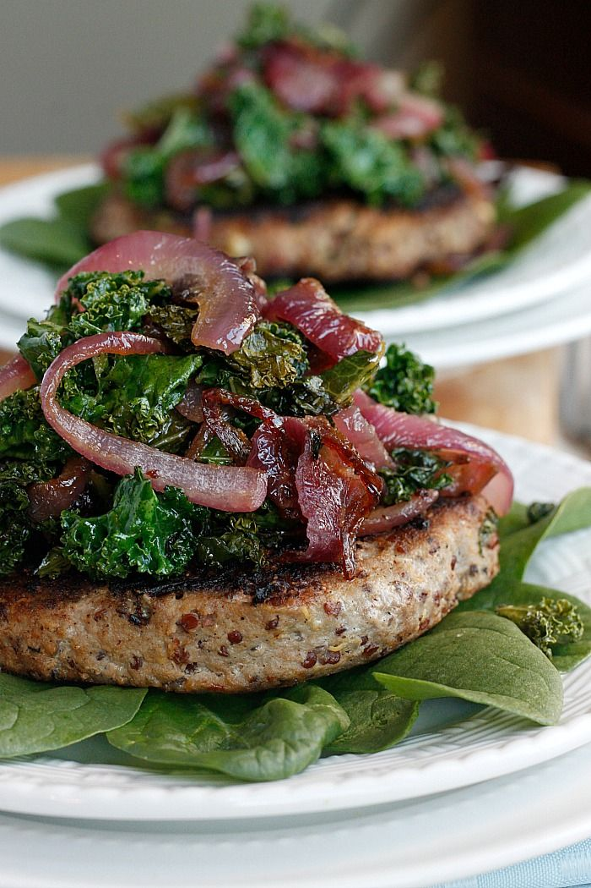

quinoa turkey burgers

The addition of quinoa gives these burgers a boost of fiber and keeps them tender. They’re very freezer-friendly so feel free to double the batch for future reheat-and-eat meals.
ingredients
- 1 lb. ground turkey
- 1 cup cooked quinoa
- 1 tsp. garlic powder (or minced garlic)
- ¼ cup finely diced onion (or more to taste)
- 1 tsp. Italian or Greek seasoning
- ⅛ tsp. black pepper
- 2 cups fresh spinach, chopped
- 2 oz. crumbled goat cheese
- 1 Tbsp. coconut oil or avocado oil, divided
directions
- Preheat oven to 350.
- In a large bowl, combine all ingredients except goat cheese. Mix well using a large spoon or your hands.
- Gently fold in crumbled goat cheese until evenly distributed, but still intact for the most part. Shape mixture into 8 patties.
- Place patties on a pan and bake in oven for about 30 minutes.
notes
- To freeze burgers: Cook burgers as directed and cool completely. Place in a single layer on a parchment-lined baking sheet and freeze until solid. Transfer to a freezer-safe container for storage. Allow burgers to thaw overnight in the fridge. Reheat in the toaster oven or oven.
- Sub in any green you want or have on hand. It doesn't have to be spinach.
- I added worcestershire sauce to the mixture.
- Leave the cheese out and top the burgers with it when they're done if you prefer, or leave cheese out of it completely. I found these flavorful enough without.
Nutrition Information
Serving Size: 2 burgers Calories: 397 Fat: 17g Sodium: 375mg Carbohydrate: 31g Fiber: 2g Sugar: 1g
Protein: 30g
click to get back to homepage